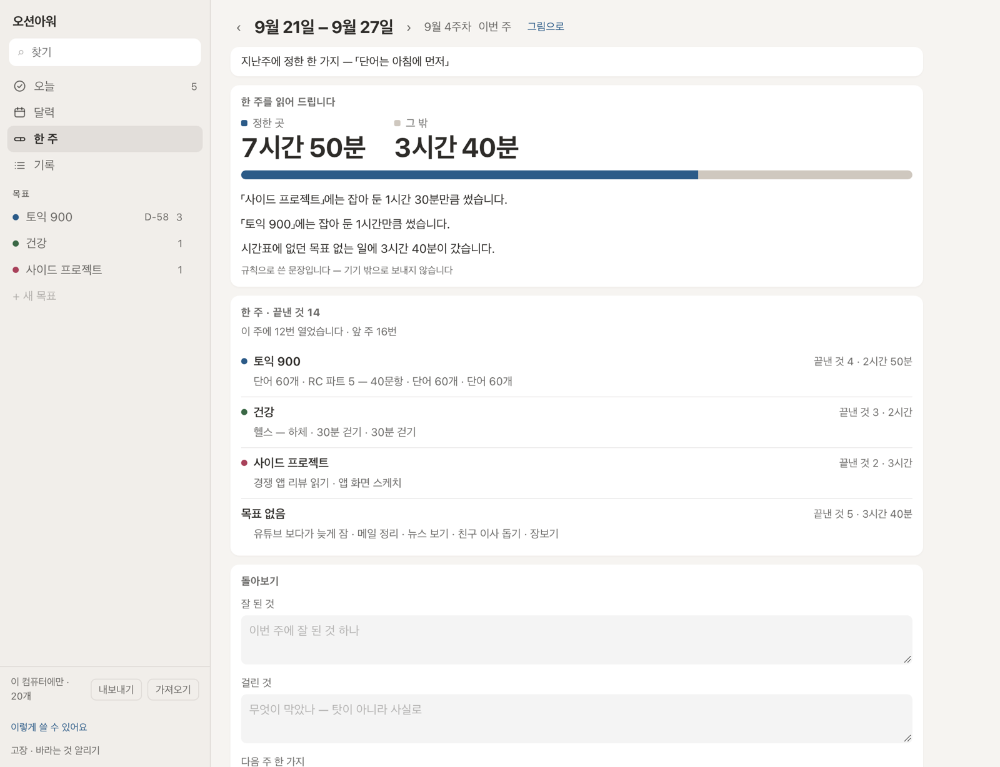
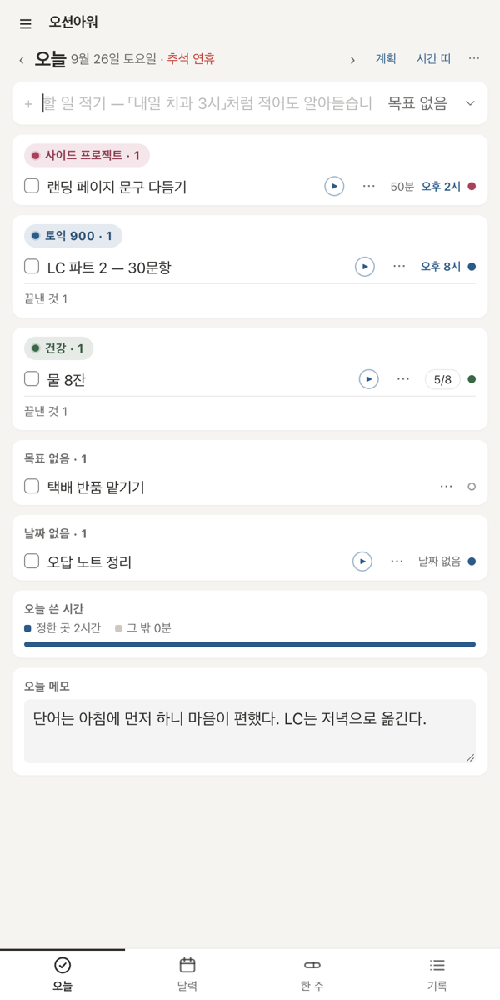
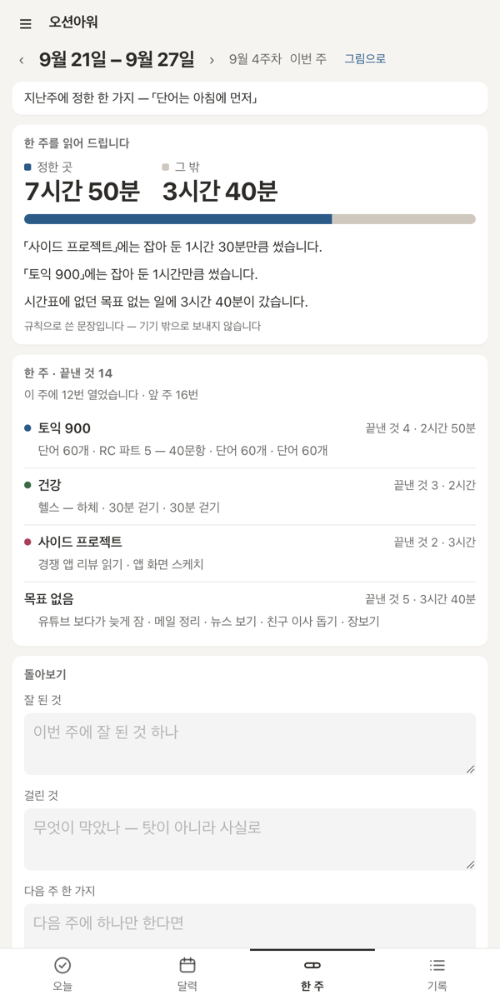
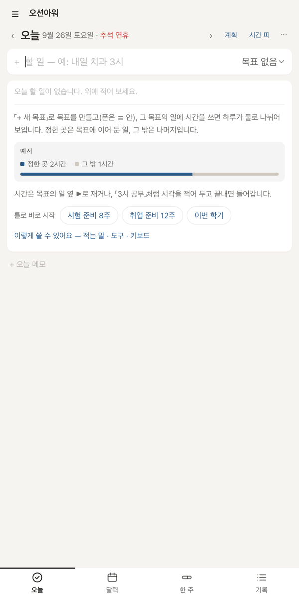
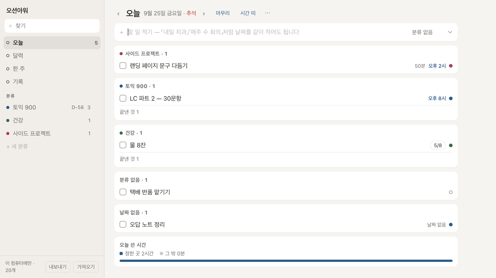
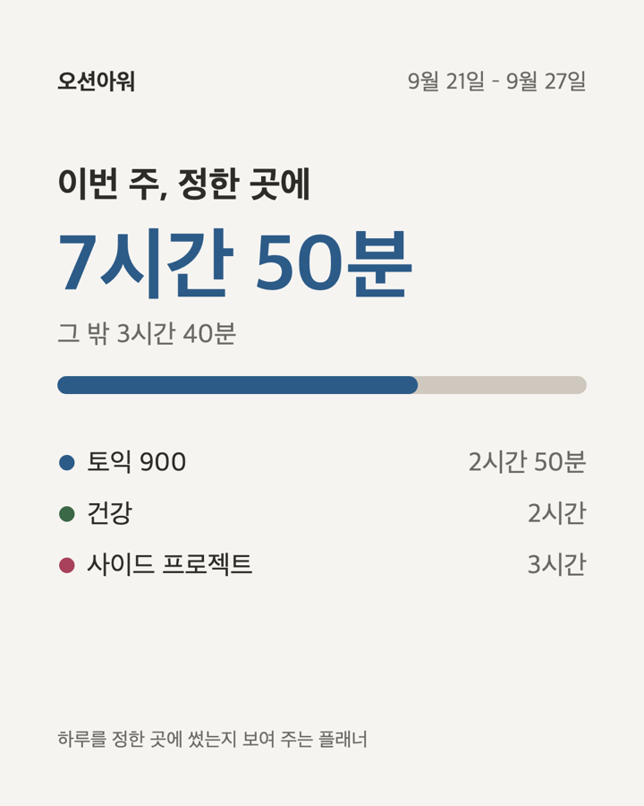

Phone



실제 앱 화면입니다. 할 일은 예시로 넣었습니다.
What
목표에 이어 둔 일에 쓴 시간.
그 밖의 일에 쓴 시간.
둘을 막대 하나에 나란히 놓습니다. 점수나 %는 없습니다.
이번 주가 괜찮았는지는 쓰는 사람이 판단합니다.
How
목표 하나에 단계 몇 개. 할 일은 목표에 이어 둡니다. 처음 화면이나 받은 틀 링크로 목표 · 루틴을 한 번에 넣을 수도 있습니다.
밀린 일과 날짜 없는 일에서 오늘 할 것을 고릅니다. 평소보다 한참 많으면 한 줄로 알려 줍니다.
한 것을 보고, 남은 것은 내일로 넘기고, 오늘을 한 줄로 적습니다.
잘 된 것, 걸린 것, 다음 주 한 가지. 세 칸이면 끝입니다.

Features
날짜 · 시각 · 길이 · 여러 날 · 마감 · 반복(매일 · 평일 · 매주 · 격주 · 매달 · 매년 · 며칠마다 · 주 N회) · 하루 N번 세기
메모 · 하위 할 일 · 복사 · 여러 개 한꺼번에 · 끌어서 순서 · 이번만 따로 · 건너뛰기 · 휴지통
▶로 재기 · 25분 · 50분 집중과 5분 쉬기 · 시간표(끌어서 옮기기) · 하루 시간 띠 · 계획이 넘치면 한 줄
아침 계획 · 저녁 마무리 · 오늘 메모 · 한 주를 읽어 주는 문장 · 돌아보기 세 칸 · 한 주 그림
단계 · 마감(D-) · 영역 · 목표 메모 · 틀로 한 번에
월 · 주 달력 · 공휴일 · 절기 · 캘린더 파일(.ics) · 내보내기 · 가져오기 · 메모까지 찾기 · 어두운 화면 · 앱으로 설치
Share

한 주 화면의 「그림으로」를 누르면 인스타에 올릴 수 있는 한 장이 나옵니다.
들어가는 건 목표 이름과 쓴 시간뿐입니다. 적은 할 일은 안 들어가고, 목표 이름도 뺄 수 있습니다.
Not here
사람을 붙잡아 두는 장치는 넣지 않습니다.
덜 열어도 정한 곳에 시간이 갔다면 그걸로 된 겁니다.
Your data
Price
폰 앱은 아직 없습니다. 나중에 내더라도 구독이 아니라 한 번 사는 값으로 냅니다.